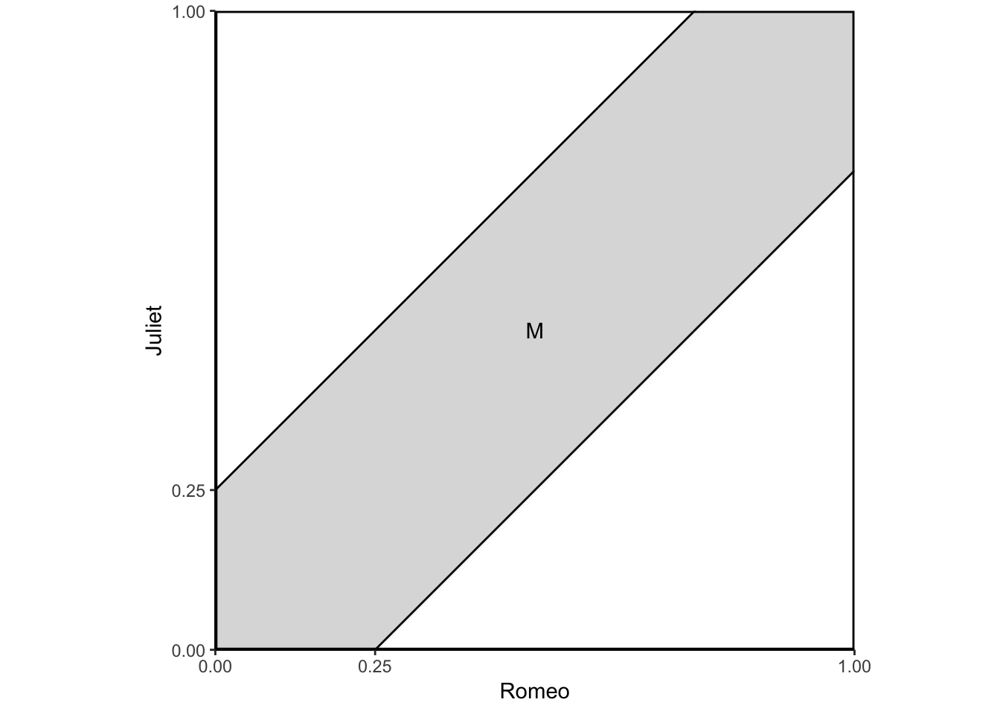

library(tidyverse)
library(broom)
library(patchwork)
options(digits = 3)
set.seed(1234)
theme_set(theme_minimal())The sample space as the set of all things that can occur. We will collect all distinct outcomes into the set \(S\). Examples include:
The sample space must define all possible realizations.
Events are a subset of the sample space:
\[E \subset S\]
\(E\) is a set, or a collection of distinct objects. We can perform operations on sets to create new sets. Consider two example sets:
\(S = \{(W,W), (W,N), (N,W), (N,N) \}\)
Operations determine what lies in the new set \(E^{\text{new}}\).
All probability functions \(P\) satisfy three axioms:
Consider the experiment of rolling a pair of 4-sided dice. We assume the dice are fair, and we interpret this assumption to mean that each of the sixteen possible outcomes [pairs \((i,j)\) with \(i,j = 1,2,3,4\)] has the same probability of \(1/16\). To calculate the probablity of an event, we must count the number of elements of the event and divide by 16 (the total number of possible outcomes). Here are some event probabilities calculated this way:
\[ \begin{aligned} \Omega &= \{(1,1), (1,2), (1,3), (1,4), (2,1), (2,2), (2,3), (2,4), \\ &\quad (3,1), (3,2), (3,3), (3,4), (4,1), (4,2), (4,3), (4,4) \} \end{aligned} \]
\[ \begin{aligned} \Pr (\text{the sum of the rolls is even}) &= 8/16 &= 1/2 \\ \Pr (\text{the sum of the rolls is odd}) &= 8/16 &= 1/2 \\ \Pr (\text{the first roll is equal to the second}) &= 4/16 &= 1/4 \\ \Pr (\text{the first roll is larger than the second}) &= 6/16 &= 3/8 \\ \Pr (\text{at least one roll is equal to 4}) &= 7/16 \\ \end{aligned} \]
Romeo and Juliet have a date at a given time, and each will arrive at the meeting place with a delay between 0 and 1 hour, with all pairs of delays being equally likely. The first to arrive will wait for 15 minutes and will leave if the other has not yet arrived. What is the probability that they will meet?
Let us use as the sample space the unit square, whose elements are the possible pairs of delays for the two of them. Our interpretation of “equally likely” pairs of delays is to let the probability of a subset of \(\Omega\) be equal to its area. This probability law satisfies the three probability axioms. The event that Romeo and Juliet will meet is the shaded region in the figure below, and its probability is calculated to be \(7/16\).
data_frame(x = seq(from = 0, to = 1, by = 0.001),
ylow = -.25 + x,
yhigh = .25 + x) %>%
ggplot(aes(x = x)) +
geom_line(aes(y = ylow)) +
geom_line(aes(y = yhigh)) +
geom_ribbon(aes(ymin = ylow, ymax = yhigh), alpha = .2) +
annotate(geom = "text", x = .5, y = .5, label = "M") +
scale_x_continuous(breaks = c(0, .25, 1)) +
scale_y_continuous(breaks = c(0, .25, 1)) +
coord_fixed(xlim = c(0, 1),
ylim = c(0, 1),
expand = FALSE) +
labs(x = "Romeo",
y = "Juliet") +
theme_classic() +
theme(panel.border = element_rect(color = "black", fill = NA, size = 1))
The event that Romeo and Juliet will arrive within 15 minutes of each other is
\[M = \{ (x,y) \mid | x - y | \leq 1/4, 0 \leq x \leq 1, 0 \leq y \leq 1 \}\].
The area of \(M\) is 1 minus the area of the two unshaded triangles, or \(1 - (3/4) \times (3/4) = 7/16\). Thus the probabiltiy of meeting is \(7/16\).
Social scientists almost always examine conditional relationships
Intuition:
Definition:
Suppose we have two events, \(E\) and \(F\), and that \(P(F)>0\). Then,
\[ \begin{eqnarray} P(E|F) & = & \frac{P(E\cap F ) } {P(F) } \end{eqnarray} \]
A conservative design team, call it \(C\), and an innovative design team, call it \(N\), are asked to separately design a new product within a month. From past experience we know:
Assuming that exactly one successful design is produced, what is the probability that it was designed by team \(N\)?
There are four possible outcomes here, corresponding to the four combinations of success and failure of the two teams:
We were given that the probabilities of these outcomes satisfy:
\[\Pr (SS) + \Pr (SF) = \frac{2}{3}, \quad \Pr (SS) + \Pr (FS) = \frac{1}{2}, \quad \Pr (SS) + \Pr (SF) + \Pr (FS) = \frac{3}{4}\]
From these relations, together with the normalization equation:
\[\Pr (SS) + \Pr (SF) + \Pr (FS) + \Pr (FF) = 1\]
we can obtain the probabilities of individual outcomes:
\[ \begin{aligned} \Pr (FF) &= 1 - [\Pr (SS) + \Pr (SF) + \Pr (FS)] = 1 - \frac{3}{4} &= \frac{1}{4} \\ \Pr (SF) &= \frac{3}{4} - [\Pr (SS) + \Pr (FS)] = \frac{3}{4} - \frac{1}{2} &= \frac{1}{4} \\ \Pr (FS) &= 1 - [\Pr (SS) + \Pr (SF)] - \Pr (FF) = 1 - \frac{2}{3} - \frac{1}{4} &= \frac{1}{12} \\ \Pr (SS) &= 1 - \Pr (SF) - \Pr (FS) - \Pr (FF) = 1 - \frac{1}{4} - \frac{1}{4} - \frac{1}{12} &= \frac{5}{12} \end{aligned} \]
The desired conditional probability is:
\[ \Pr (FS | \{ SF, FS \}) = \frac{\frac{1}{12}}{\frac{1}{4} + \frac{1}{12}} = \frac{\frac{1}{12}}{\frac{3}{12} + \frac{1}{12}} = \frac{\frac{1}{12}}{\frac{4}{12}} = \frac{12}{12 \times 4} = \frac{1}{4} \]
\[ \begin{eqnarray} P(A|B) & = & \frac{P(A\cap B)}{P(B)} \\ P(B|A) & = & \frac{P(A \cap B) } {P(A)} \end{eqnarray} \]
Less Serious Example \(\leadsto\) type of person who attends football games:
\[ \begin{eqnarray} P(\text{Attending a football game}| \text{Drunk}) & = & 0.01 \\ P(\text{Drunk}| \text{Attending a football game}) & \approx & 1 \end{eqnarray} \]
Suppose that we have a set of events \(F_{1}, F_{2}, \ldots, F_{N}\) such that the events are mutually exclusive and together comprise the entire sample space \(\cup_{i=1}^{N} F_{i} = \text{Sample Space}\). Then, for any event \(E\)
\[ \begin{eqnarray} P(E) & = & \sum_{i=1}^{N} P(E | F_{i} ) \times P(F_{i}) \end{eqnarray} \]
You enter a chess tournament where your probability of winning a game is \(0.3\) against half the players (type 1), \(0.4\) against a quarter of the players (type 2), and \(0.5\) against the remaining quarter of the players (type 3). You play a game against a randomly chosen opponent. What is the probability of winning?
Let \(A_i\) be the event of playing with an opponent of type \(i\). We have
\[\Pr (A_1) = 0.5, \quad \Pr (A_2) = 0.25, \quad \Pr (A_3) = 0.25\]
Also, let \(B\) be the event of winning. We have
\[\Pr (B | A_1) = 0.3, \quad \Pr (B | A_2) = 0.4, \quad \Pr (B | A_3) = 0.5\]
Thus, by the total probability theorem, the probability of winning is
\[ \begin{aligned} \Pr (B) &= \Pr (A_1) \Pr (B | A_1) + \Pr (A_2) \Pr (B | A_2) + \Pr (A_3) \Pr (B | A_3) \\ &= 0.5 \times 0.3 + 0.25 \times 0.4 + 0.25 \times 0.5 \\ &= 0.375 \end{aligned} \]
Bayes’ Rule: For two events \(A\) and \(B\),
\[ \begin{eqnarray} P(A|B) & = & \frac{P(A)\times P(B|A)}{P(B)} \end{eqnarray} \]
The proof is:
\[ \begin{eqnarray} P(A|B) & = & \frac{P(A \cap B) }{P(B) } \\ & = & \frac{P(B|A)P(A) } {P(B) } \end{eqnarray} \]
Let \(A_i\) be the event of playing with an opponent of type \(i\). We have
\[\Pr (A_1) = 0.5, \quad \Pr (A_2) = 0.25, \quad \Pr (A_3) = 0.25\]
Also, let \(B\) be the event of winning. We have
\[\Pr (B | A_1) = 0.3, \quad \Pr (B | A_2) = 0.4, \quad \Pr (B | A_3) = 0.5\]
Suppose that you win. What is the probability \(\Pr (A_1 | B)\) that you had an opponent of type 1? Using Bayes’ rule, we have
\[ \begin{aligned} \Pr (A_1 | B) &= \frac{\Pr (A_1) \Pr (B | A_1)}{\Pr (A_1) \Pr (B | A_1) + \Pr (A_2) \Pr (B | A_2) + \Pr (A_3) \Pr (B | A_3)} \\ &= \frac{0.5 \times 0.3}{0.5 \times 0.3 + 0.25 \times 0.4 + 0.25 \times 0.5} \\ &= \frac{0.15}{0.375} \\ &= 0.4 \end{aligned} \]
How do we identify racial groups from lists of names? The Census Bureau collects information on distribution of names by race. For example, Washington is the “blackest” name in America.
\[ \begin{eqnarray} P(\text{black}|\text{Wash} ) & = & \frac{P(\text{black}) P(\text{Wash}| \text{black}) }{P(\text{Wash} ) } \\ & = & \frac{P(\text{black}) P(\text{Wash}| \text{black}) }{P(\text{black})P(\text{Wash}|\text{black}) + P(\text{nb})P(\text{Wash}| \text{nb}) } \\ & = & \frac{0.126 \times 0.00378}{0.126\times 0.00378 + 0.874 \times 0.000060616} \\ & \approx & 0.9 \end{eqnarray} \]
A test for a certain rare disease is assumed to be correct 95% of the time: if a person has the disease, the test results are positive with probability \(0.95\), and if the person does not have the disease, the test results are negative with probability \(0.95\). A random person drawn from a certain population has probability \(0.001\) of having the disease. Gien that the person just tested positive, what is the probability of having the disease?
If \(A\) is the event that the person has the disease, and \(B\) is the even that the test results are positive
\[ \begin{aligned} \Pr (A) &= 0.001 \\ \Pr (A^c) &= 0.999 \\ \Pr (B | A) &= 0.95 \\ \Pr (B | A^c) &= 0.05 \end{aligned} \]
The desired probability \(\Pr (A|B)\) is
\[ \begin{aligned} \Pr (A|B) &= \frac{\Pr (A) \Pr (B|A)}{\Pr (A) \Pr (B|A) + \Pr (A^c) \Pr (B | A^c)} \\ &= \frac{0.001 \times 0.95}{0.001 \times 0.95 + 0.999 \times 0.05} \\ &= 0.0187 \end{aligned} \]
Does one event provide information about another event?
Independence: Two events \(E\) and \(F\) are independent if
\[ \begin{eqnarray} P(E\cap F ) & = & P(E)P(F) \end{eqnarray} \]
Independence is symetric: if \(F\) is independent of \(E\), then \(E\) is indepenent of \(F\)
Suppose \(E\) and \(F\) are independent. Then,
\[ \begin{eqnarray} P(E|F ) & = & \frac{P(E \cap F) }{P(F) } \\ & = & \frac{P(E)P(F)}{P(F)} \\ & = & P(E) \end{eqnarray} \]
Consider an experiment involving two successive rolls of a 4-sided die in which all 16 possible outcomes are equally likely and have probability \(1/16\).
Are the events
\[A_i = \{ \text{1st roll results in } i \}, \quad B_j = \{ \text{2nd roll results in } j \}\]
independent? We have
\[ \begin{aligned} \Pr (A_i \cap B_j) &= \Pr (\text{the outcome of the two rolls is } (i,j)) = \frac{1}{16} \\ \Pr (A_i) &= \frac{\text{number of elements in } A_i}{\text{total number of possible outcomes}} = \frac{4}{16} \\ \Pr (B_j) &= \frac{\text{number of elements in } B_j}{\text{total number of possible outcomes}} = \frac{4}{16} \end{aligned} \]
We observe that \(\Pr (A_i \cap B_j) = \Pr (A_i) \Pr (B_j)\), and the independence of \(A_i\) and \(B_j\) is verified.
Are the events
\[A = \{ \text{1st roll is a 1} \}, \quad B = \{ \text{sum of the two rolls is a 5} \}\]
independent? The answer here is not quite obvious. We have
\[\Pr (A \cap B) = \Pr (\text{the result of the two rolls is } (1,4)) = \frac{1}{16}\]
and also
\[\Pr (A) = \frac{\text{number of elements of } A}{\text{total number of possible outcomes}} = \frac{4}{16}\]
The event \(B\) consists of the outcomes \((1,4), (2,3), (3,2), (4,1)\), and
\[\Pr (B) = \frac{\text{number of elements of } B}{\text{total number of possible outcomes}} = \frac{4}{16}\]
Thus, we see that \(\Pr (A \cap B) = \Pr (A) \Pr (B)\), and the independence of \(A_i\) and \(B_j\) is verified.
Are the events
\[A = \{ \text{maximum of the two rolls is 2} \}, \quad B = \{ \text{minimum of the two rolls is 2} \}\]
independent? Intuitively, the answer is “no” because the minimum of the two rolls conveys some information about the maximum. For example, if the minimum is \(2\) then the maximum cannot be \(1\). More precisely, to verify that \(A\) and \(B\) are not indpendent, we calculate
\[\Pr (A \cap B) = \Pr (\text{the result of the two rolls is } (2,2)) = \frac{1}{16}\]
and also
\[ \begin{aligned} \Pr (A) &= \frac{\text{number of elements in } A_i}{\text{total number of possible outcomes}} = \frac{3}{16} \\ \Pr (B) &= \frac{\text{number of elements in } B_j}{\text{total number of possible outcomes}} = \frac{5}{16} \end{aligned} \]
We have \(\Pr (A) \Pr (B) = \frac{15}{16^2}\), so that \(\Pr (A \cap B) \neq \Pr (A) \Pr (B)\), and \(A\) and \(B\) are not independent
We say that the events \(A_1, A_2, \ldots, A_n\) are independent if
\[ \Pr \left( \bigcap_{i \in S} A_i \right) = \prod_{i \in S} \Pr (A_i),\quad \text{for every subset } S \text{ of } \{1,2,\ldots,n \}\]
For the case of three events, \(A_1, A_2, A_3\), independence amounts to satisfying the four conditions
\[ \begin{aligned} \Pr (A_1 \cap A_2) &= \Pr (A_1) \Pr (A_2) \\ \Pr (A_1 \cap A_3) &= \Pr (A_1) \Pr (A_3) \\ \Pr (A_2 \cap A_3) &= \Pr (A_2) \Pr (A_3) \\ \Pr (A_1 \cap A_2 \cap A_3) &= \Pr (A_1) \Pr (A_2) \Pr (A_3) \end{aligned} \]
If an experiment involves a sequence of independent but identical stages, we say that we have a sequence of independent trials. In the case where there are only two possible results of each stage, we say that we have a sequence of independent Bernoulli trials.
Consider an experiment that consists of \(n\) independent tosses of a coin, in which the probability of heads is \(p\), where \(p\) is some number between 0 and 1. In this context, independence means that the events \(A_1, A_2, \ldots, A_n\) are independent where \(A_i = i \text{th toss is a heads}\).
Let us consider the probability
\[p(k) = \Pr(k \text{ heads come up in an } n \text{-toss sequence})\]
The probability of any given sequence that contains \(k\) heads is \(p^k (1-p)^{n-k}\), so we have
\[p(k) = \binom{n}{k} p^k (1-p)^{n-k}\]
where we use the notation
\[\binom{n}{k} = \text{number of distinct } n \text{-toss sequences that contain } k \text{ heads}\]
The numbers \(\binom{n}{k}\) (read as “\(n\) choose \(k\)”) are known as the binomial coefficients, while the probabilities \(p(k)\) are known as the binomial probabilities. Using a counting argument, we can show that
\[\binom{n}{k} = \frac{n!}{k! (n-k)!}, \quad k=0,1,\ldots,n\]
where for any positive integer \(i\) we have
\[i! = 1 \times 2 \times \cdots \times (i-1) \times i\]
and, by convention, \(0! = 1\). Note that the binomial probabilities \(p(k)\) must sum to 1, thus showing the binomial formula
\[\sum_{k=0}^n \binom{n}{k} p^k (1-p)^{n-k} = 1\]
A system consists of \(n\) identical components, each of which is operational with probability \(p\), independent of other components. The system is operational if at least \(k\) out of the \(n\) components are operational. What is the probability that the system is operational?
Let \(A_i\) be the event that exactly \(i\) components are operational. The probability that the system is operational is the probability of the union \(\bigcup_{i=k}^n A_i\), and since the \(A_i\) are disjoint, it is equal to
\[\sum_{i=k}^n \Pr (A_i) = \sum_{i=k}^n p(i)\]
where \(p(i)\) are the binomial probabilities. Thus, the probability of an operational system is
\[\sum_{i=k}^n \binom{n}{i} p^i (1-p)^{n-i}\]
For instance, if \(n=100, k=60, p=0.7\), the probability of an operational system is 0.979.
Frequently we need to calculate the total number of possible outcomes in a sample space. For example, when we want to calculate the probability of an event \(A\) with a finite number of equally likely outcomes, each of which has an already known probability \(p\), then the probability of \(A\) is given by
\[\Pr (A) = p \times (\text{number of elements of } A)\]
Consider a process that consists of \(r\) stages. Suppose that:
Then, the total number of possible results of the \(r\)-stage process is
\[n_1, n_2, \cdots, n_r\]
A local telephone number is a 7-digit sequence, but the first digit has to be different from 0 or 1. How many distinct telephone numbers are there? We can visualize the choice of a sequence as a sequential process, where we select one digit at a time. We have a total of 7 stages, and a choice of one out of 10 elements at each stage, except for the first stage where we have only 8 choices. Therefore, the answer is
\[8 \times 10 \times 10 \times 10 \times 10 \times 10 \times 10 = 8 \times 10^6\]
We start with \(n\) distinct objects, and let \(k\) be some positive integer such that \(k \leq n\). We wish to count the number of different ways that we can pick \(k\) out of these \(n\) objects and arrange them in a sequence (i.e. the number of distinct \(k\)-object sequences). The number of possible sequences, called \(k\)-permutations, is
\[ \begin{aligned} n(n-1) \cdots (n-k-1) &= \frac{n(n-1) \cdots (n-k+1) (n-k) \cdots 2 \times 1}{(n-k) \cdots 2 \times 1} \\ &= \frac{n!}{(n-k)!} \end{aligned} \]
Let us count the number of words that consist of four distinct letters. This is the problem of counting the number of 4-permutations of the 26 letters in the alphabet. The desired number is
\[\frac{n!}{(n-k)!} = \frac{26!}{22!} = 26 \times 25 \times 24 \times 23 = 358,800\]
A six-sided die is rolled three times independently. Which is more likely: a sum of 11 or a sum of 12?
A sum of 11 is obtained with the following 6 combinations:
\[(6,4,1) (6,3,2) (5,5,1) (5,4,2) (5,3,3) (4,4,3)\]
A sum of 12 is obtained with the following 6 combinations:
\[(6,5,1) (6,4,2) (6,3,3) (5,5,2) (5,4,3) (4,4,4)\]
Each combination of 3 distinct numbers corresponds to 6 permutations, where \(k=n\):
\[3! = 3 \times 2 \times 1 = 6\]
while each combination of 3 numbers, two of which are equal, corresponds to 3 permutations.
Since all permutations are equally likely, a sum of 11 is more likely than a sum of 12.
There are \(n\) people and we are interested in forming a committee of \(k\). How many different committees are possible? Notice that this is a counting problem inside of a counting problem: we need to count the number of \(k\)-element subsets of a given \(n\)-element set. In a combination, there is no ordering of the selected elements. For example, whereas the 2-permutations of the letters \(A, B, C, D\) are
\[AB, BA, AC, CA, AD, DA, BC, CB, BD, DB, CD, DC\]
the combinations of two out of these four letters are
\[AB, AC, AD, BC, BD, CD\]
In this example, we group together duplicates that are not distinct and tabulate their frequency. More generally, we can view each combination as associated with \(k!\) duplicate \(k\)-permutation. Hence, the number of possible combinations is equal to
\[\frac{n!}{k!(n-k)!}\]
The number of combinations of two out of the four letters \(A, B, C, D\) is found by letting \(n=4\) and \(k=2\). It is
\[\binom{n}{k} = \binom{4}{2} = \frac{4!}{2!2!} = 6\]
Twenty distinct cars park in the same parking lot every day. Ten of these cars are US-made, while the other ten are foreign-made. THe parking lot has exactly twenty spaces, all in a row, so the cars park side by side. However, the drivers have varying schedules, so the position any car might take on a certain day is random.
In how many different ways can the cars line up?
Since the cars are all distinct, there are \(n! = 20!\) ways to line them up.
What is the probability that on a given day, the cars will park in such a way that they alternate (no two US-made cars are adjacent and no two foreign-made are adjacent?)
To find the probability that the cars will be parked so that they alternate, we count the number of “favorable” outcomes, and divide by the total number of possible outcomes found in part (a). We count in the following manner. We first arrange the US cars in an ordered sequence (permutation). We can do this in \(10!\) ways, since there are \(10\) distinct cars. Similarly, arrange the foreign cars in an ordered sequence, which can also be done in \(10!\) ways. Finally, interleave the two sequences. This can be done in two different ways, since we can let the first car be either US-made or foreign. Thus, we have a total of \(2 \times 10! \times 10!\) possibilities, and the desired probability is
\[\frac{2 \times 10! \times 10!}{20!}\]
Note that we could have solved the second part of the problem by neglecting the fact that the cars are distinct. Suppose the foreign cars are indistinguishable, and also that the US cars are indistinguishable. Out of the 20 available spaces, we need to choose 10 spaces in which to place the US cars, and thus there are \(\binom{20}{10}\) possible outcomes. Out of these outcomes, there are only two in which the cars alternate, depending on whether we start with a US or a foreign car. Thus, the desired probability is \(2 / \binom{20}{10}\), which coincides with our earlier answer.
devtools::session_info()## Session info -------------------------------------------------------------## setting value
## version R version 3.5.1 (2018-07-02)
## system x86_64, darwin15.6.0
## ui X11
## language (EN)
## collate en_US.UTF-8
## tz America/Chicago
## date 2018-10-15## Packages -----------------------------------------------------------------## package * version date source
## assertthat 0.2.0 2017-04-11 CRAN (R 3.5.0)
## backports 1.1.2 2017-12-13 CRAN (R 3.5.0)
## base * 3.5.1 2018-07-05 local
## bindr 0.1.1 2018-03-13 CRAN (R 3.5.0)
## bindrcpp 0.2.2 2018-03-29 CRAN (R 3.5.0)
## broom * 0.5.0 2018-07-17 CRAN (R 3.5.0)
## cellranger 1.1.0 2016-07-27 CRAN (R 3.5.0)
## cli 1.0.0 2017-11-05 CRAN (R 3.5.0)
## colorspace 1.3-2 2016-12-14 CRAN (R 3.5.0)
## compiler 3.5.1 2018-07-05 local
## crayon 1.3.4 2017-09-16 CRAN (R 3.5.0)
## datasets * 3.5.1 2018-07-05 local
## devtools 1.13.6 2018-06-27 CRAN (R 3.5.0)
## digest 0.6.15 2018-01-28 CRAN (R 3.5.0)
## dplyr * 0.7.6 2018-06-29 cran (@0.7.6)
## evaluate 0.11 2018-07-17 CRAN (R 3.5.0)
## forcats * 0.3.0 2018-02-19 CRAN (R 3.5.0)
## ggplot2 * 3.0.0 2018-07-03 CRAN (R 3.5.0)
## glue 1.3.0 2018-07-17 CRAN (R 3.5.0)
## graphics * 3.5.1 2018-07-05 local
## grDevices * 3.5.1 2018-07-05 local
## grid 3.5.1 2018-07-05 local
## gtable 0.2.0 2016-02-26 CRAN (R 3.5.0)
## haven 1.1.2 2018-06-27 CRAN (R 3.5.0)
## hms 0.4.2 2018-03-10 CRAN (R 3.5.0)
## htmltools 0.3.6 2017-04-28 CRAN (R 3.5.0)
## httr 1.3.1 2017-08-20 CRAN (R 3.5.0)
## jsonlite 1.5 2017-06-01 CRAN (R 3.5.0)
## knitr 1.20 2018-02-20 CRAN (R 3.5.0)
## lattice 0.20-35 2017-03-25 CRAN (R 3.5.1)
## lazyeval 0.2.1 2017-10-29 CRAN (R 3.5.0)
## lubridate 1.7.4 2018-04-11 CRAN (R 3.5.0)
## magrittr 1.5 2014-11-22 CRAN (R 3.5.0)
## memoise 1.1.0 2017-04-21 CRAN (R 3.5.0)
## methods * 3.5.1 2018-07-05 local
## modelr 0.1.2 2018-05-11 CRAN (R 3.5.0)
## munsell 0.5.0 2018-06-12 CRAN (R 3.5.0)
## nlme 3.1-137 2018-04-07 CRAN (R 3.5.1)
## patchwork * 0.0.1 2018-09-06 Github (thomasp85/patchwork@7fb35b1)
## pillar 1.3.0 2018-07-14 CRAN (R 3.5.0)
## pkgconfig 2.0.2 2018-08-16 CRAN (R 3.5.1)
## plyr 1.8.4 2016-06-08 CRAN (R 3.5.0)
## purrr * 0.2.5 2018-05-29 CRAN (R 3.5.0)
## R6 2.2.2 2017-06-17 CRAN (R 3.5.0)
## Rcpp 0.12.18 2018-07-23 CRAN (R 3.5.0)
## readr * 1.1.1 2017-05-16 CRAN (R 3.5.0)
## readxl 1.1.0 2018-04-20 CRAN (R 3.5.0)
## rlang 0.2.1 2018-05-30 CRAN (R 3.5.0)
## rmarkdown 1.10 2018-06-11 CRAN (R 3.5.0)
## rprojroot 1.3-2 2018-01-03 CRAN (R 3.5.0)
## rstudioapi 0.7 2017-09-07 CRAN (R 3.5.0)
## rvest 0.3.2 2016-06-17 CRAN (R 3.5.0)
## scales 1.0.0 2018-08-09 CRAN (R 3.5.0)
## stats * 3.5.1 2018-07-05 local
## stringi 1.2.4 2018-07-20 CRAN (R 3.5.0)
## stringr * 1.3.1 2018-05-10 CRAN (R 3.5.0)
## tibble * 1.4.2 2018-01-22 CRAN (R 3.5.0)
## tidyr * 0.8.1 2018-05-18 CRAN (R 3.5.0)
## tidyselect 0.2.4 2018-02-26 CRAN (R 3.5.0)
## tidyverse * 1.2.1 2017-11-14 CRAN (R 3.5.0)
## tools 3.5.1 2018-07-05 local
## utils * 3.5.1 2018-07-05 local
## withr 2.1.2 2018-03-15 CRAN (R 3.5.0)
## xml2 1.2.0 2018-01-24 CRAN (R 3.5.0)
## yaml 2.2.0 2018-07-25 CRAN (R 3.5.0)This work is licensed under the CC BY-NC 4.0 Creative Commons License.